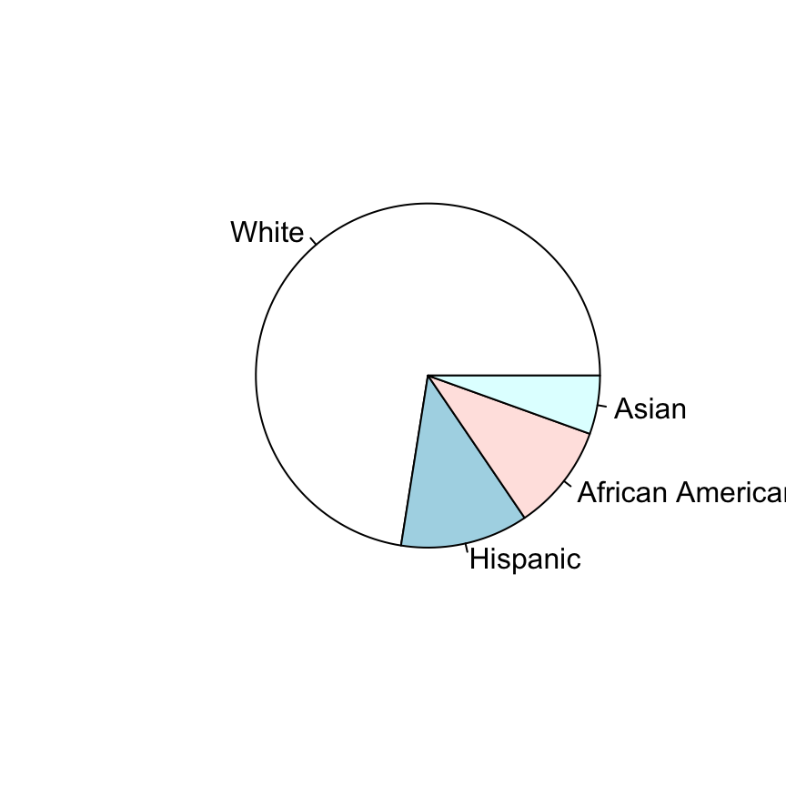
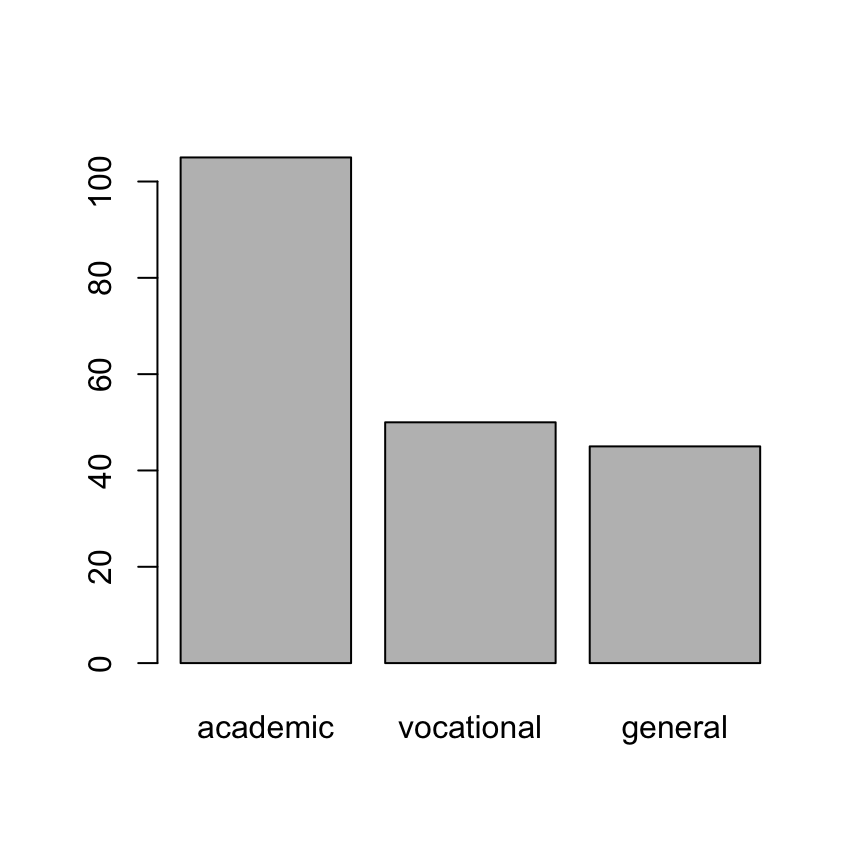
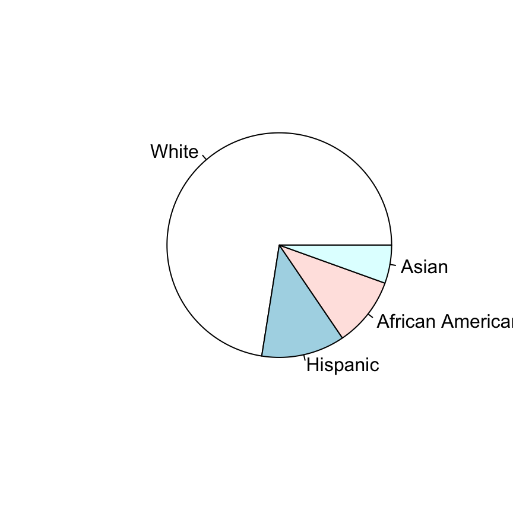
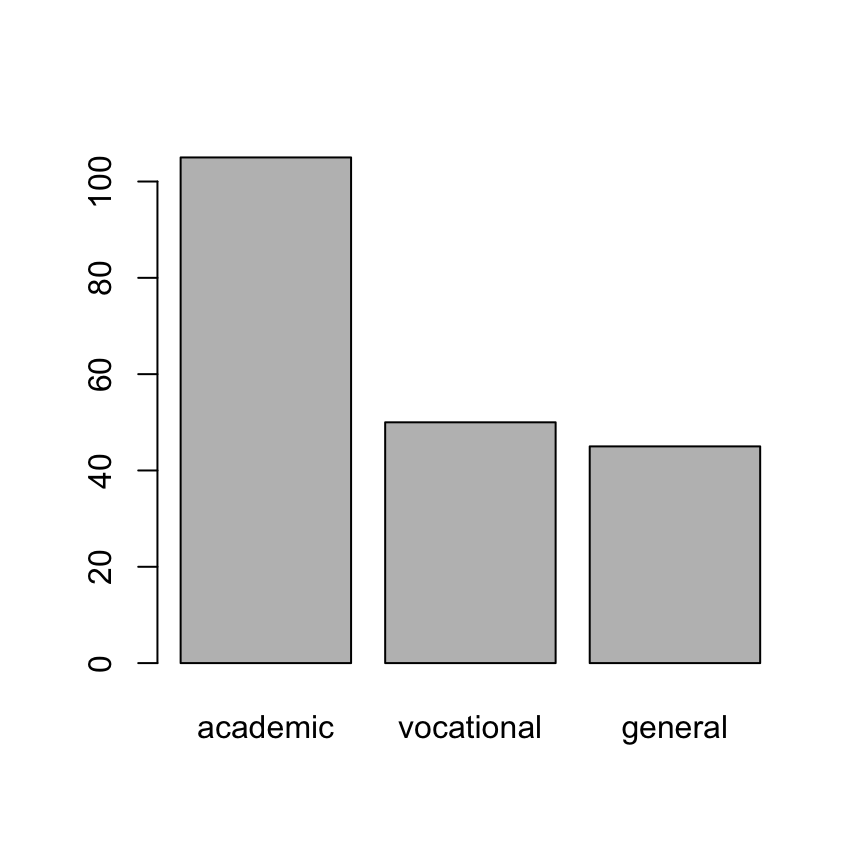
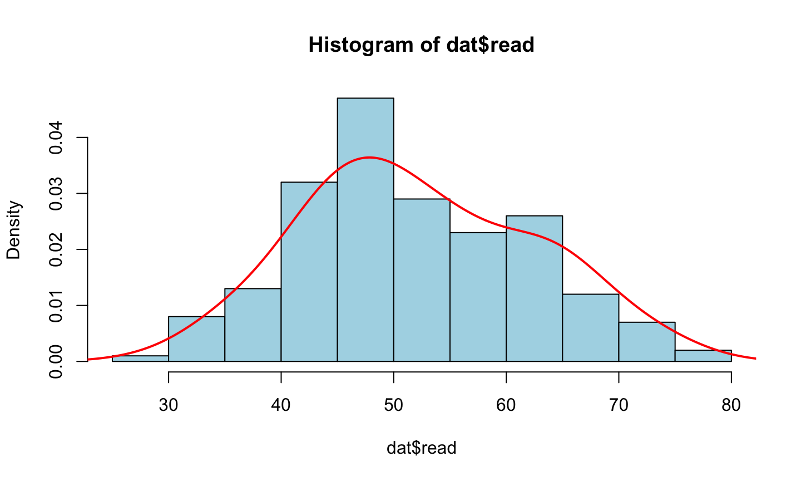
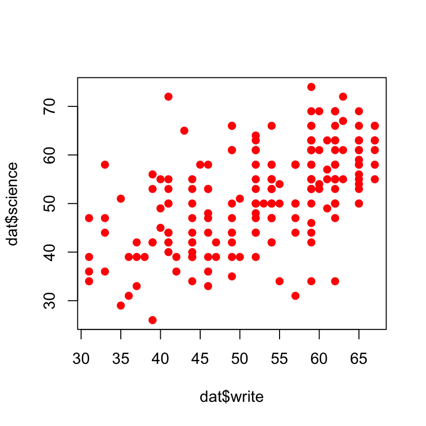
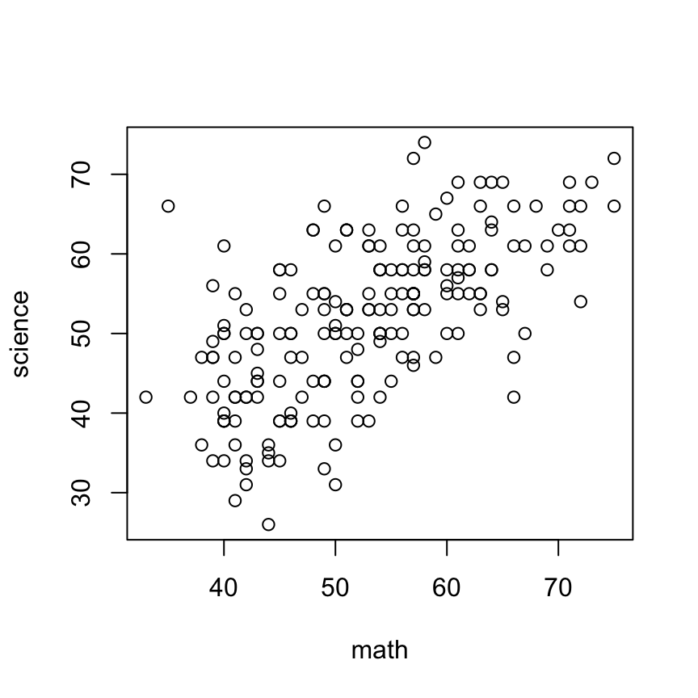

圓餅圖：pie
pie(sort(table(dat$race), decreasing = TRUE))

長條圖：barplot
barplot(sort(table(dat$prog), decreasing = TRUE))

圓餅圖：pie
pie(sort(table(dat$race), decreasing = TRUE))

長條圖：barplot
barplot(sort(table(dat$prog), decreasing = TRUE))

hist(dat$read, breaks=10, col="lightblue", prob=TRUE) lines(density(dat$read, bw=4), col=2, lwd=2)

plot(x=dat$write, y=dat$science, pch=19, col=2)

plot(x=dat$math, y=dat$science, xlab="math", ylab="science")
